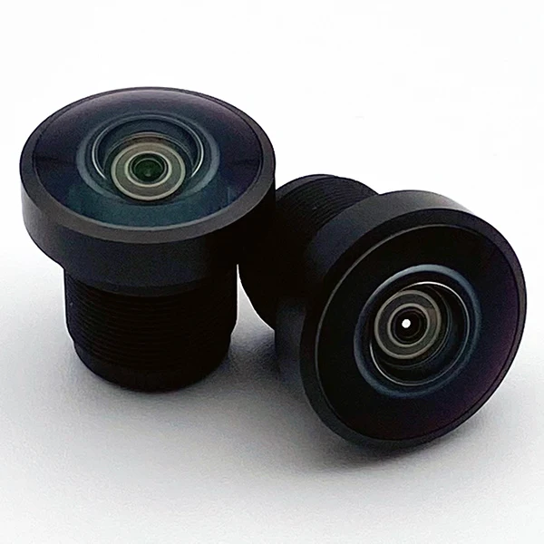

Summer Internship · Commonlands Optics
Summer Internship
MTF tested lenses and developed manufacturing methods for assembly line production.

Overview
Tasked with developing 3D printed fixtures to expedite assembly line production of custom lenses. Ran Modulation Transfer Function (MTF) tests on Trioptics machine for the entire product line to develop product specification sheets for customers. Assembled and troubleshot laser engraving machine for assembly line usage in making custom lenses.
Responsibilities
- MTF (Modulation Transfer Function) tested lenses to create specification sheets for customers
- Designed fixtures using geometric dimensions & tolerancing based on 3D printer specifications and camera dimensions to expedite assembly line production of custom lenses
- Built raspberry pi based camera testing setup to focus lenses for customers with repeatable standards
- Set up and troubleshot laser engraving machine for use on assembly line
- Organized data from the entire company for use by future engineers to ensure they have proper starting point
Design Process
Details for this internship are confidential per a signed non-disclosure agreement.